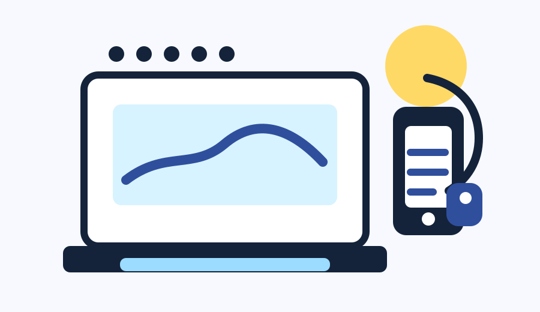

CERN Website Refactor
A reconstruction of Tim Berners-Lee's original World Wide Web site at CERN — rebuilt with semantic HTML, validated by the W3C, and re-published on GitHub Pages.
View the CERN siteWelcome to Bryan Roache's portfolio. This is a single page with five main sections, in this order: About, Approach (seven cards on how I work and what I value), Projects (selected class work), Gallery (emotion landscape images and a featured video), and Contact (a message form). Each section starts with a clearly labeled header. Use the navigation menu to jump to any section. Press Tab to move through links and controls. Press the Escape key to close any open dialog. Use arrow keys inside the photo viewer to move between images.
Web designer and multimedia student at NOVA. Information technology student focused on accessibility-first web design.
About MeAbout
A NOVA student building accessible web work — and a full life off-screen.
I'm a student at NOVA Annandale studying Web and Multimedia with a focus on accessibility.
Outside of class, I'm into activism, volunteering, music and exercise.
Approach
Seven cards on how I think, what I've learned, and what I aim for. Use the Hide buttons to collapse any card you've already read.
Work Style
Every project starts with three questions: Is it clear? Is it useful? Can someone get where they're going without a fight?
From there, the work is in the details — heading order that makes sense, link text that tells the truth, color you can actually read, alt text that respects the reader's time, and navigation that gets out of the way.
Design Point of View
Practicality over pretty. That's the whole job.
A page that looks gorgeous but locks out a screen reader isn't finished — it's a sketch with a finish on it. The work isn't done until someone using a keyboard, magnification, or a voice can move through it without a workaround.
Beautiful is good. Beautiful and usable is the assignment.
Accessibility Point of View
Accessibility isn't a feature you add at the end. It's the foundation, poured first.
This isn't a checkbox. It's a way of building. And once you build like that, you can't go back.

Education
Both disciplines speak the same language: clarity is care, and structure is access.
Technology Skills
Tools are only as good as the people they serve.

Portfolio Focus
This portfolio is a working studio, not a gallery.
Every page is built to be read by a person and a screen reader, opened on a phone or a desktop, and understood on the first scroll.

Project Experience
Each class project tries to answer one question: would this still work for someone who can't use it the way I do?
Projects
A handful of sites and experiments built this semester — each organized for keyboard navigation, screen-reader structure, and readable contrast from the start.
A reconstruction of Tim Berners-Lee's original World Wide Web site at CERN — rebuilt with semantic HTML, validated by the W3C, and re-published on GitHub Pages.
View the CERN siteA small static consulting page imported from the Dark Moon files archive and re-organized as a clean, link-checked subfolder of this portfolio.
View the Dark Moon pageAI-generated landscape images mapped to human emotions — a visual study paired with descriptive alt text so the meaning carries even when the image doesn't.
View the Landscapes projectUnparalleledShoegaze356 — my first attempt at composing music with AI on Suno's platform.
Listen on Suno (opens in a new tab)Gallery
Emotion-driven landscape images and a featured multimedia video — captioned, alt-texted, and keyboard-friendly.
Six landscape images, each paired with a feeling. Click any photo to open the slideshow — use ← → arrows or Tab to navigate, Enter to open, Esc to close.
Heads up for screen-reader users: this video has no narration — the description below is the audio description.
An abstract energetic visualization of multimedia creation. A glowing laptop and digital devices release vibrant streams of blue, purple, and orange light. Floating around them are symbols for coding, video, audio, design, and a bright accessibility symbol with a white cane radiating energy.
Contact
Have a question or want to connect? Send a message — I read every one.